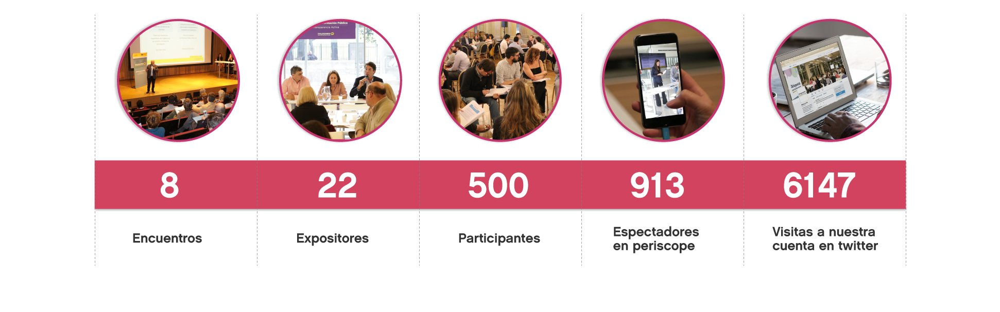
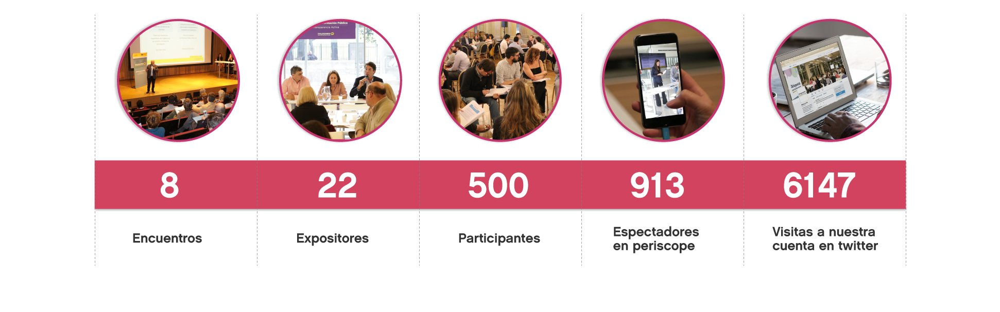

“Trabajamos por la democracia y la transparencia”
La base del equilibrio entre los poderes es la buena comunicación; nuestra misión es promover el vínculo entre la Legislatura de la Ciudad de Buenos Aires y el Poder Ejecutivo. Impulsamos la transparencia y el acceso a la información pública, porque sabemos que los ciudadanos son los dueños de la información y los titulares de la democracia.
Subsecretaría de Reforma Política y Asuntos Legislativos
Dir. Gral. de Asuntos Legislativos
Dir. Gral. de Reforma Política y Electoral
La base de la democracia es la confianza de los ciudadanos; la certidumbre de que existen las condiciones necesarias para la competencia, la igualdad y la transparencia.
En DGRPOLYE desarrollamos iniciativas orientadas a fortalecer la institucionalidad electoral de la Ciudad y la formación, en materia cívica y electoral.

Dir. Gral. de Seguimiento de Organismos de Control y Acceso a la Información
Desde DGSOCAI coordinamos las relaciones con los Organismos de Control y tramitamos las solicitudes de acceso a la información pública.
Fomentamos iniciativas de Transparencia con todas las áreas de Gobierno y acciones tendientes a difundir y acercar este derecho de acceso a todos los ciudadanos.

Construcción Colectiva
La conversación pública es un elemento central para la construcción de instituciones democráticas y de políticas sustentables. Para que tenga lugar, es necesario contar con espacios en los que sectores sociales y políticos y los individuos con perspectivas diversas expongan disensos y construyan consensos. Desde la Subsecretaría, desarrollamos la plataforma Dialogando BA, para obtener insumos de los distintos sectores involucrados, con el fin de lograr una normativa incluyente e identificar los puntos de disenso, para traerlos a la mesa, en un ambiente donde se puedan dialogar abiertamente.
 



.JPG)

Dialogando Internacional
El acceso a la información pública y la confianza en las instituciones son fuentes claves para la legitimidad democrática. En nuestra región, las debilidades en estos temas pueden ser fuentes de inestabilidad política. Para cerrar el año organizamos, en la Legislatura Porteña, un encuentro con expositores internacionales y legisladores para, conversar acerca de las tendencias globales, los mecanismos de transparencia, el diálogo y la rendición de cuentas.
Expositores y temas
Manual Dialogando
DialogandoBA es una herramienta destinada a generar una conversación pública plural y a tomar decisiones informadas en distintos temas y con los públicos más diversos. Para aplicarla a distintos contextos, desarrollamos el Manual de DialogandoBA, que permitecompartir la experiencia de esta herramienta, para fortalecer procesos de reforma del GCBA y acompañar en la planificación y aplicación de la metodología.
Descargá el manual acá
Fortalecer nuestras Instituciones

Buenos Aires es pionera en acceso a la información pública: la ley 104 es una de las primeras del país. En 2016 propusimos una reforma para actualizarla, en términos de tecnología y de avance de una perspectiva de derechos. El consenso legislativo fue enorme: 54 votos a favor, sobre 57 presentes. Una normativa de acceso a la información novedosa es fundamental para poner al Estado a la vanguardia de los procesos y de su mejora, a la vez que empodera a las personas en su participación en la vida pública y en el desarrollo de la actividad privada.
Descargá la ley sancionada
En línea con la Reforma de la Ley 104, en especial con el capítulo de Transparencia Activa, emprendimos una gestión transversal con todos los Ministerios del GCBA, a fin de poner a disposición información institucional relevante y actualizar la página web de Gobierno, de acuerdo a los estándares internacionales de transparencia.
Basándonos en los indicadores de Transparencia Activa, postulados por la Ley Modelo de la Organización de Estados Americanos (OEA), iniciamos un plan de publicación proactiva de información pública. Un 64% de los Ministerios completaron esta instancia de manera exitosa y ya comenzamos a desarrollar la segunda fase de implementación.
Presentamos un proyecto de ley para que la Ciudad de Buenos Aires tenga su Código Electoral; un paso clave para Ciudad, que implica autonomía en materia político-electoral y el saldo de una deuda histórica. Para ello, efectuamos un diagnóstico de las fortalezas y debilidades del sistema político-electoral y, a partir de estos insumos diversos y contradictorios, formulamos una propuesta de reforma, dirigida a la modernización y el fortalecimiento del sistema.
Descargá el libro
Proyecto de ley del Código Electoral
Es una publicación digital que cuenta con información respectiva al funcionamiento de la Legislatura de la CABA; brinda información acerca de los Legisladores, la composición de los bloques y las diferentes autoridades de la casa.
Descargar

Surge de un análisis pormenorizado de la actividad legislativa del año 2015, desarrollada por la Legislatura de la Ciudad, desde el enfoque del poder Ejecutivo.
Descargar
Elegir a conciencia


Promueve la formación de ciudadanos informados, responsables y comprometidos a ser agentes de cambio en sus comunidades, a través de los canales de debate público y de participación en la comunidad

Capacitadas en la puerba piloto
Los datos numericos son resultados del años 2016
Promoción del voto extranjero